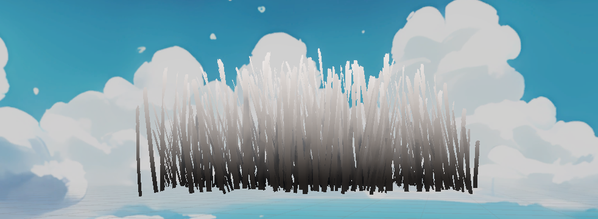
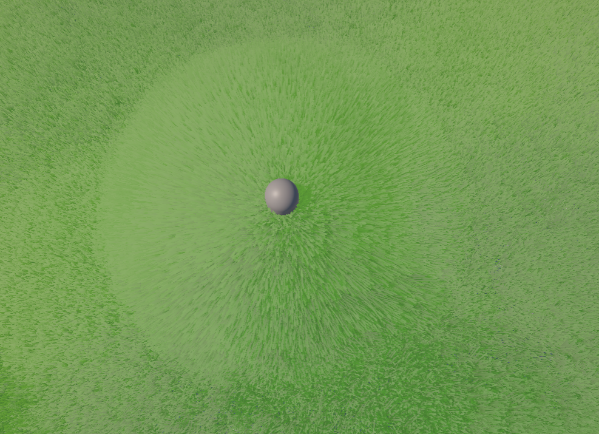
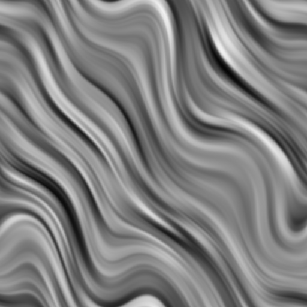

Interactive Grass Shader
Unity 6 (URP) · Shader Graph (vertex + fragment) · C# — Centrale Nantes, infoRV (virtual reality) track, 2026.
A field of grass that sways in the wind, shows travelling gusts, and bends away from the player in real time. Everything is driven by three shared signals, so motion and colour always stay in sync.
The core idea
Each blade is treated as a vertical gradient. Three signals feed both the vertex and fragment stages:
- Height mask: 0 at the root, 1 at the tip. It pins the roots during movement and blends the colour from bottom to top. It is divided by the object's Y scale, so tall and short grass blend over the same world distance.
- Wind gust mask: a wind texture sampled in world space and scrolled over time, so gusts sweep across the field as visible waves instead of every blade moving at once.
- Tracker position: the interacting object's position, sent from C# as a global shader property.

Vertex stage: how the grass moves
- Ambient sway: scrolling gradient noise, scaled by a wind-intensity parameter.
- Wind gusts: the world-space wind texture, read with
Sample Texture 2D LOD(the only sampler available in the vertex stage), then sharpened with a contrast step. - Player interaction: distance to the tracker turned into a falloff (full at the tracker, zero at the interaction radius). Vertices are pushed horizontally away in world space, then transformed back to object space.
- Combining them: sway and gust are restricted to X and Z so blades never stretch, then the height mask blends from the original to the displaced position, so roots never move.

Player interaction seen from above: the grass is pushed away from the tracker. The interaction radius is deliberately enlarged here to make the effect easier to see.

The wind texture. Sampled with world X/Z and scrolled over time, its light and dark bands become gusts sweeping across the whole field.
Fragment stage: how the grass is coloured
- Distance tint: near and far colours blended by distance to the camera.
- Wind colouring: the same gust mask that moves the grass also lightens it, so you can see the wind travelling across the field.
- Height gating keeps the gust colour on the upper part of the blade, and an alpha-clipped texture cuts the blade shape out of each quad.
C# helper
[ExecuteAlways]
public class TrackerPositionSender : MonoBehaviour
{
[SerializeField] private Transform tracker;
private static readonly int TrackerPositionID = Shader.PropertyToID("_trackerposition");
private void Update()
{
Transform t = tracker != null ? tracker : transform;
Shader.SetGlobalVector(TrackerPositionID, t.position);
}
}It runs in edit mode too, so the interaction can be previewed without entering Play.
Grass blade meshes/textures, trees and skybox come from free asset packs (The Illustrated Nature, Midgard Skybox). The shader graph and the C# script are my own work.